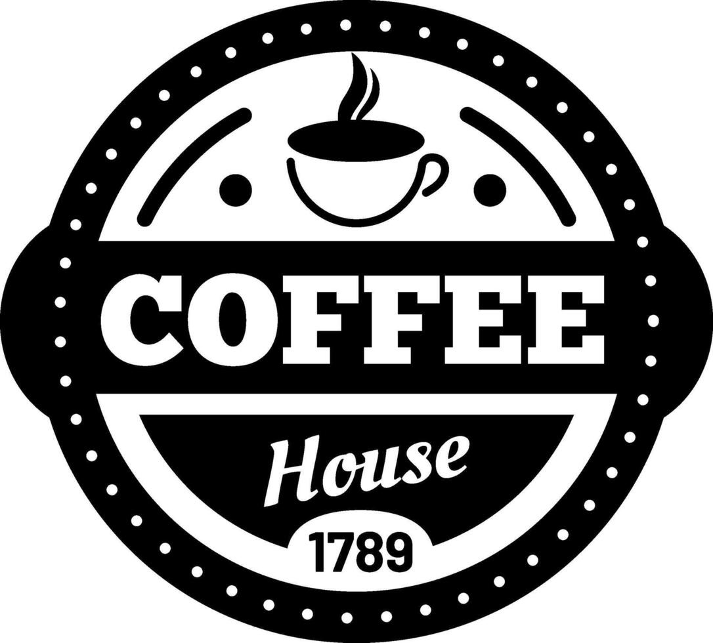
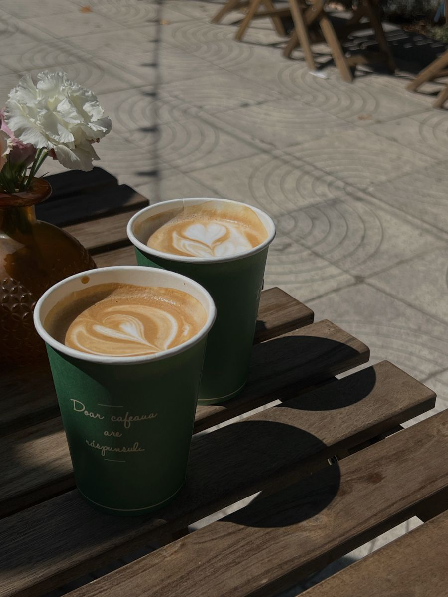
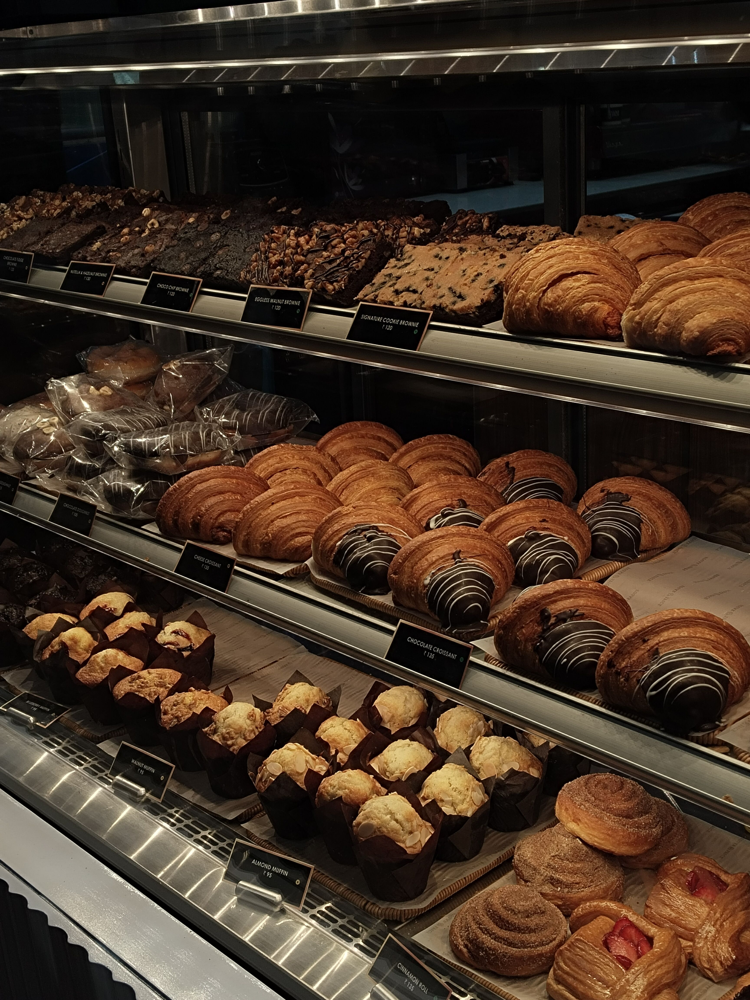
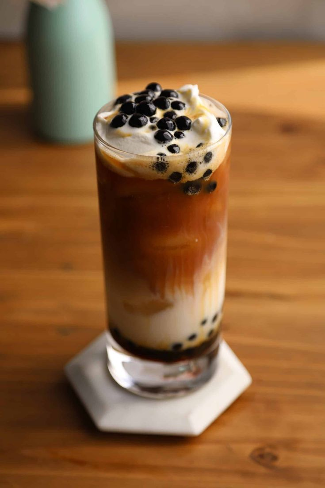
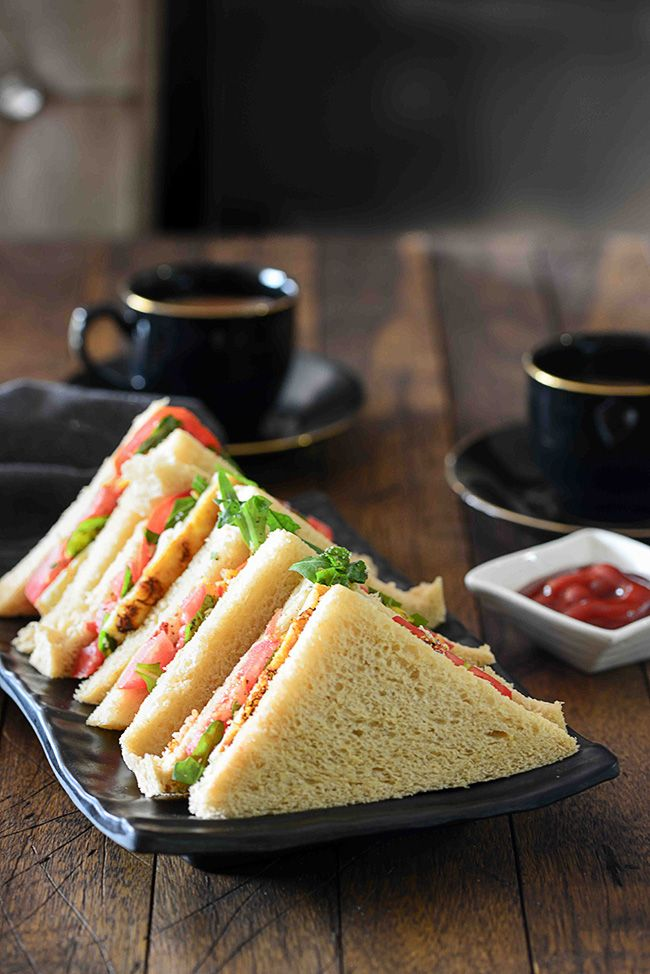

- HOME
- ABOUT
- MENU
- CONTACT US
- LOCATION
- first button
- second button
COFFEE
SERVICE FOR COZY FAMILY MEETINGS AND MORE

Menu

Hot coffee

Tasty pastry

Cold drinks

Lanch
ABOUT US
I think it was LAJFﾒs website, before applying to its programs Iﾒve never failed. I always won every competition, became the leader at school and clubs, if I worked hard and wanted smth, I got it. And I think that perfectionism and consistency were killing me. I were feeling comfortable, everything always was good, I was in charge of my life and if smth was going wrong I very stressed out and as soon as possible tried to solve it, going insane with the thought of smth isnﾒt perfect. When I wasnﾒt accepted to CRS my world collapsed, I refused to accept this fail and couldnﾒt understand how itﾒs possible, since I thought I was a perfect candidate. People were saying: ﾓbut you got such an experience, and that's the most important thingﾔ. I agreed but deep inside never understand the real meaning of it,since the most important thing is victory.
COMMON QUESTIONS
Mostly for becoming more brave, independent and confident by exchanging experiences with other people.
My expression of the world was always different from kids my age, since I supported the outcasts, fight for healthy food, had the best physical training, carried about social problems, loved science and art at the same time. It all singled me out and people thought I’m strange (even my friends). And I was afraid of it, didn’t like that much attention, tried to hide my movement and the real me. Mostly for becoming more brave, independent and confident by exchanging experiences with other people.
Mostly for becoming more brave, independent and confident by exchanging experiences with other people.
My expression of the world was always different from kids my age, since I supported the outcasts, fight for healthy food, had the best physical training, carried about social problems, loved science and art at the same time. It all singled me out and people thought I’m strange (even my friends). And I was afraid of it, didn’t like that much attention, tried to hide my movement and the real me. Mostly for becoming more brave, independent and confident by exchanging experiences with other people.
Mostly for becoming more brave, independent and confident by exchanging experiences with other people.
My expression of the world was always different from kids my age, since I supported the outcasts, fight for healthy food, had the best physical training, carried about social problems, loved science and art at the same time. It all singled me out and people thought I’m strange (even my friends). And I was afraid of it, didn’t like that much attention, tried to hide my movement and the real me. Mostly for becoming more brave, independent and confident by exchanging experiences with other people.